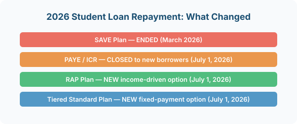

Federal vs Private Student Loans: The First Thing To Know
Before talking about repayment, it helps to understand the two main types of student loans, because the rules for each are completely different.
Federal student loans are issued by the U.S. government. They have fixed interest rates, income-driven repayment options, and paths to forgiveness like Public Service Loan Forgiveness (PSLF). Most student borrowers have federal loans. The repayment changes in 2026 only affect federal loans.
Private student loans are issued by banks, credit unions, and online lenders (like Sallie Mae, Discover, or SoFi). Their terms depend on your credit score, and they do not offer income-driven repayment or federal forgiveness programs. Private loans are separate from the 2026 changes.
If you are not sure which type you have, log into FTC consumer finance guides, this approach is widely recommended by financial advisors.
">StudentAid.gov. That portal shows all your federal loans. Private loans appear on your credit report but not on StudentAid.gov.What Happened in 2026: The Big Changes
The One Big Beautiful Bill Act (signed July 2025) overhauled federal student loan repayment. The biggest changes take effect on July 1, 2026 — just days from now.
Here is what changed:
- SAVE plan ended. The SAVE (Saving on a Valuable Education) plan was blocked by courts and officially ended in March 2026. All 7.5 million borrowers on SAVE must choose a new plan.
- PAYE and ICR closed. PAYE (Pay As You Earn) and ICR (Income-Contingent Repayment) stop accepting new borrowers on July 1, 2026. Existing enrollees can stay until they sunset in July 2028.
- New RAP Plan launches. The Repayment Assistance Plan (RAP) is a new income-driven option starting July 1.
- Tiered Standard Plan. A new fixed-payment plan with terms based on your total loan balance.
- Standard Plan still exists. The classic 10-year standard repayment plan remains available.
- IBR and PSLF stay. Income-Based Repayment and Public Service Loan Forgiveness are unchanged.
What the New RAP Plan Means for Beginners
The Repayment Assistance Plan (RAP) is the new income-driven repayment option. It caps your monthly payment at a percentage of your discretionary income, similar to older IDR plans but with updated terms.
If your income is low or you are between jobs, RAP may offer a lower monthly payment than the Standard Plan. You must recertify your income each year to stay on the plan.
If you were on SAVE: your loan servicer will contact you with a 90-day window to choose a new plan. You can pick RAP, the Standard Plan, or the Tiered Standard Plan. If you do not choose, you will be automatically moved to the Standard or Tiered Standard Plan, which may have higher payments.
Do not wait for your servicer to contact you. Log into StudentAid.gov today, review your loan details, and research your options before July 1. A proactive choice beats an automatic assignment every time.
How Student Loans Fit Into Your Budget
If you are a beginner just starting to repay student loans, here is how to make them part of your overall money plan:
- Know your monthly payment. Check your servicer's website or StudentAid.gov to see exactly what you owe each month.
- Autopay saves you money. Most servicers offer a 0.25% interest rate reduction when you set up automatic payments.
- Pay more when you can. Extra payments go directly to the principal, which reduces total interest over the life of the loan.
- Do not ignore it. Defaulting on federal loans can lead to
According to the Consumer Financial Protection Bureau, this approach is widely recommended by financial advisors.
wage garnishment, tax refund seizure, and damage to your credit score.
Student loans can feel overwhelming, but they are just one part of your financial picture. Building a budget that includes your loan payments is the first step toward making them manageable.
Common Questions About Student Loans
Do I have to start paying immediately after graduation?
Federal loans have a six-month grace period after graduation before payments start. Private loan grace periods vary — check with your lender.
Can I switch repayment plans later?
Yes, you can switch between federal repayment plans at any time for free. If your financial situation changes, you are not locked into your initial choice.
What if I cannot afford my payment?
If you are on a federal plan, options like deferment, forbearance, or switching to an income-driven plan can lower or pause payments temporarily. Contact your servicer to discuss what is available.